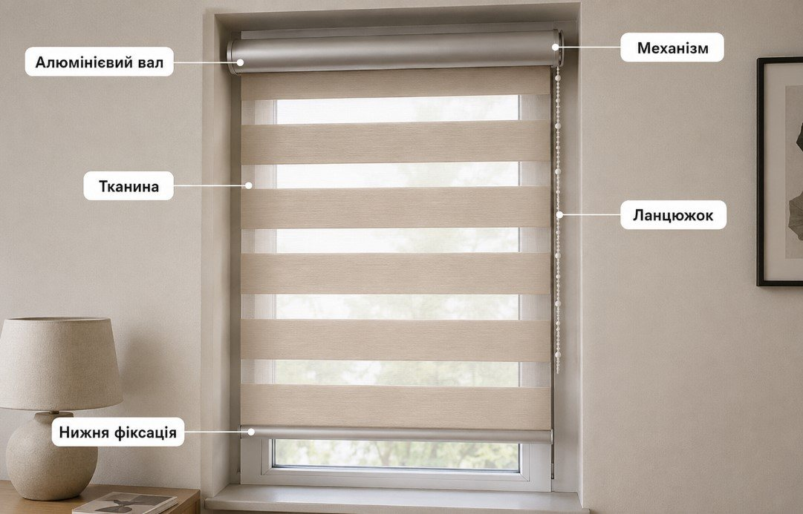
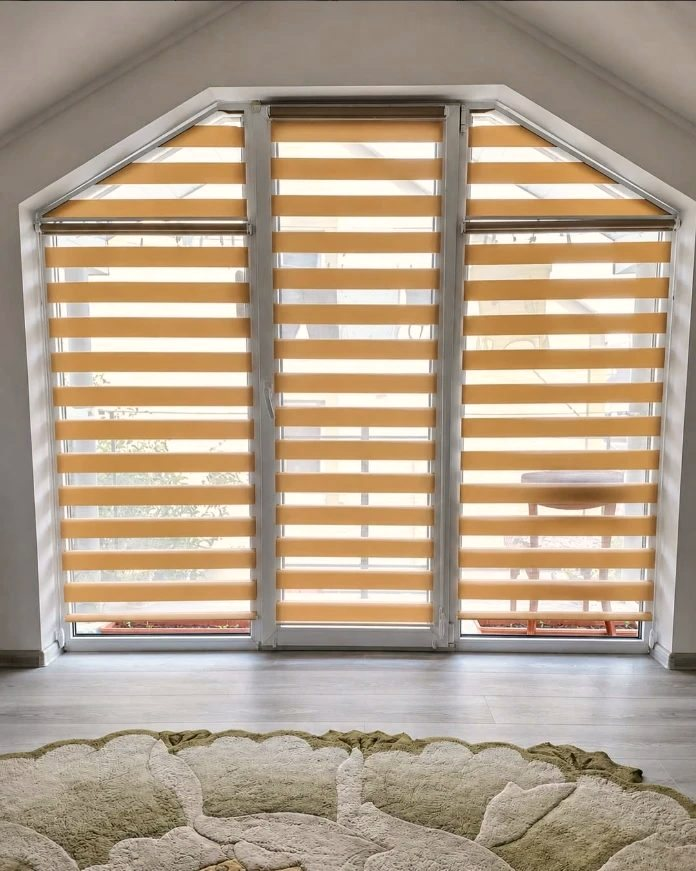
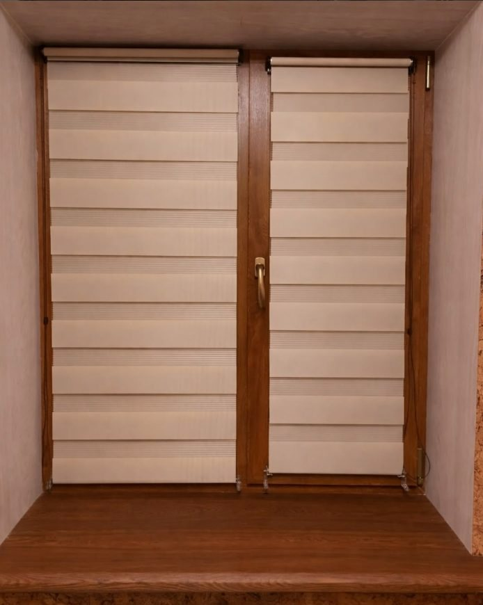
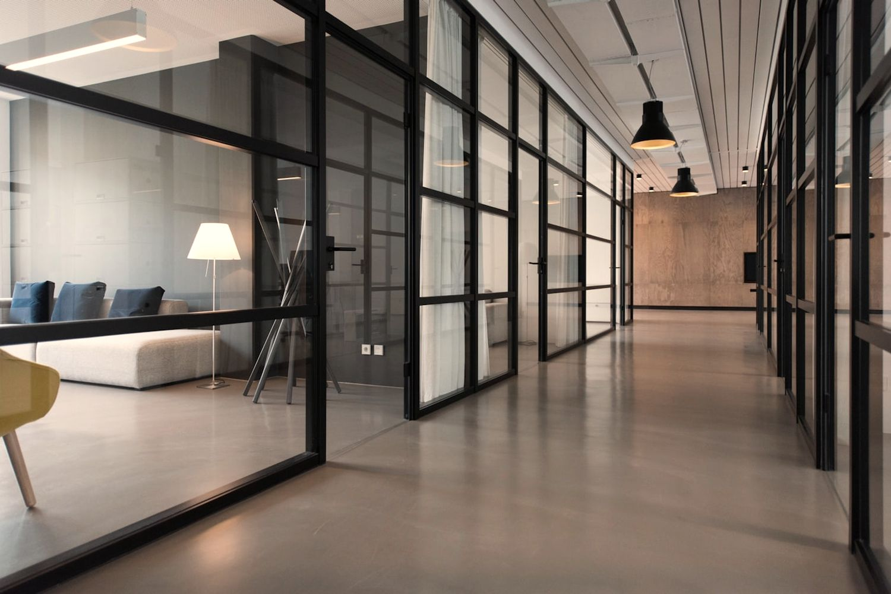
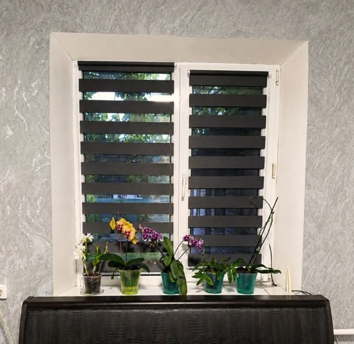
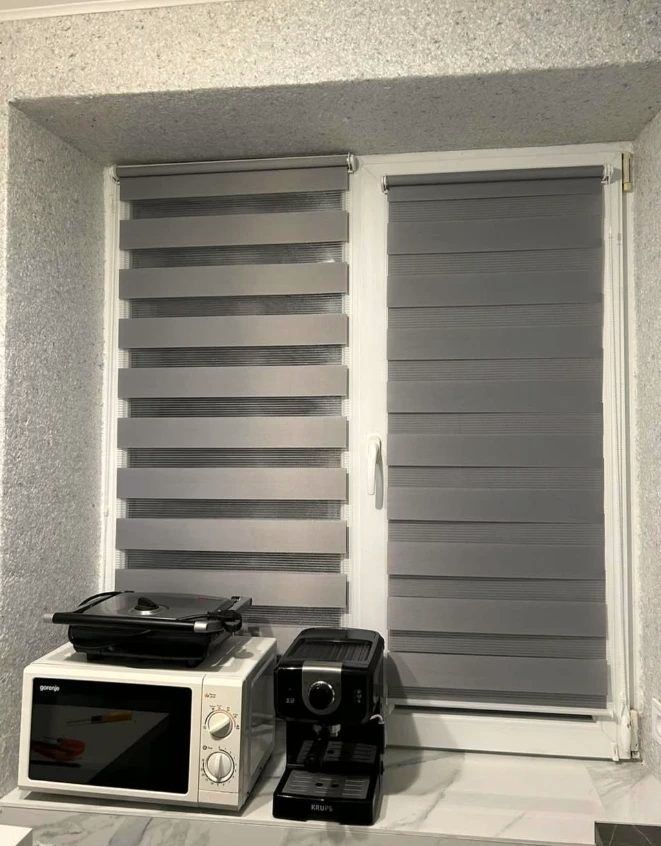
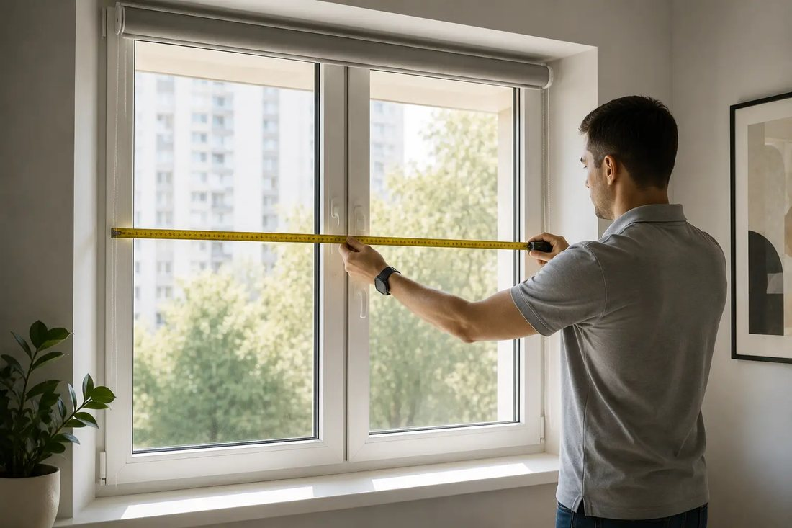
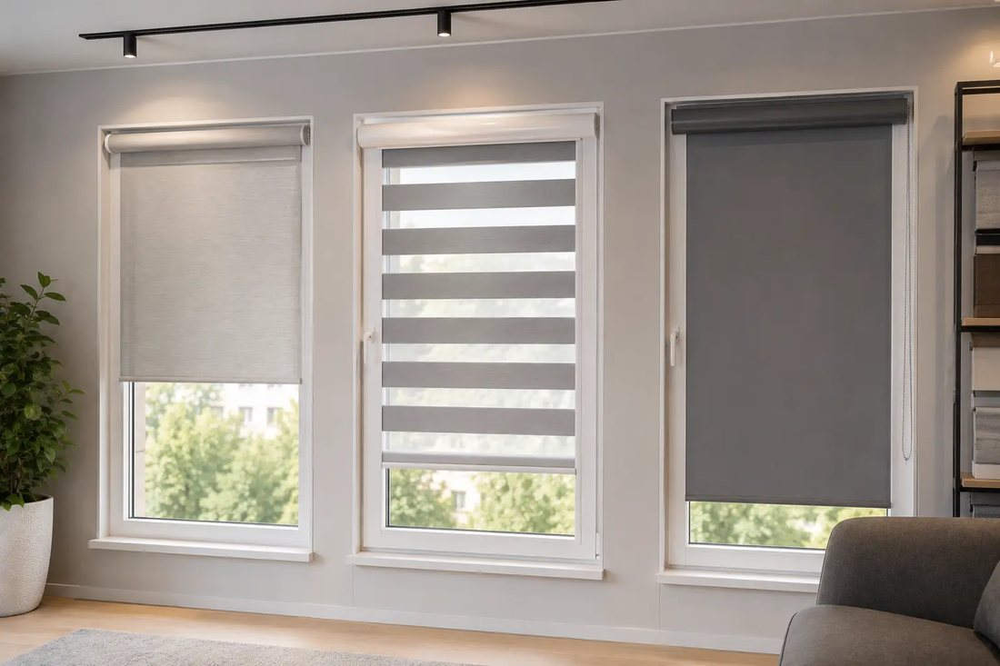
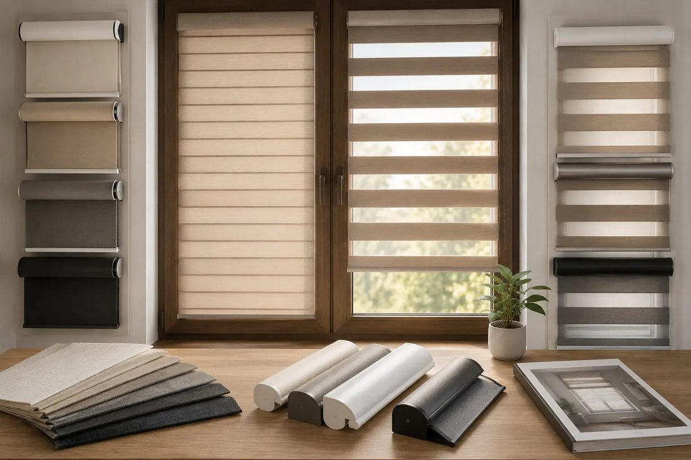
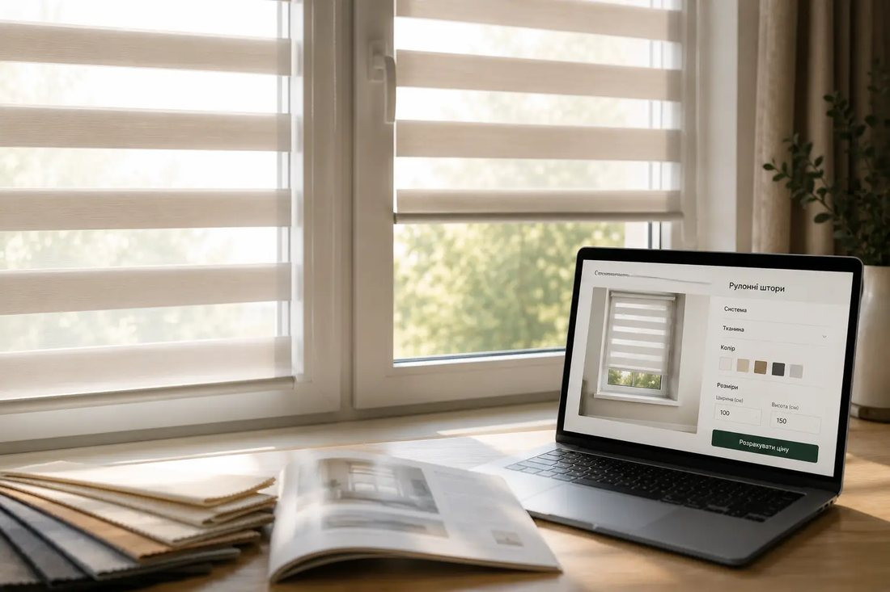

Власне виробництво Розмір кожної стулки Виготовлення від 3 днів Доставка по Україні Монтаж без свердління Власне виробництво Розмір кожної стулки Виготовлення від 3 днів Доставка по Україні Монтаж без свердління
Досвід54 000+
вікон оформлено
Спеціалізація12+
років команда працює з рулонними
Виготовлення3 дні
мінімальний строк виготовлення
ДоставкаУся Україна
Новою Поштою, виріб приїжджає зібраним
День-ніч
Що ви отримуєте в комплекті

Фірмова Штора день-ніч
. Гарантія на механізм підйому, кріплення та якість збірки.
Добре працює в кімнатах
Про нас
Не зі складу, а під ваше вікно
Кожен виріб виготовляється під конкретну стулку, приїжджає зібраним і з усім, що потрібно для монтажу. Кріплення на стулку без свердління входять у комплект.
Бренд «Фірмова Штора» створено 15 травня 2020 року. За плечима команди 15+ років загального досвіду роботи зі шторами і 12+ років саме з рулонними системами: бренд молодший за команду, яка його зробила.
За цей час ми оформили 54 000+ вікон: від однієї штори в кімнату до обʼєктів, де потрібен єдиний стиль на десятки вікон.
Власне виробництво, без посередників
Працюємо офіційно як ФОП, з документами
Менеджер перевіряє розміри перед запуском
Доставка по всій Україні
Знак якості УкраїниВідзнака «Лідери року» — незалежне підтвердження якості виробництва

Мансардне вікно нестандартної форми: три окремі штори під кожну секцію
Наші роботи
Як це виглядає у клієнтів
Реальні вікна після монтажу, без рендерів і стокових фото.
Чому до нас повертаються
Виріб, який просто підходить вашому вікну
Однакова увага до кожного замовлення, від однієї штори в кімнату до обʼєкта на десятки вікон.
Точний розмір
Кожен виріб робиться під конкретну стулку з точністю до сантиметра, а не береться зі складу.
Монтаж без свердління
Кронштейни на стулку входять у комплект. Вікно лишається цілим, штора знімається за секунду.
Перевірка перед розкроєм
Менеджер звіряє ваші розміри з типом вікна. Це знімає більшість помилок ще до виробництва.

Приїжджає зібраним
Розпакували, повісили кронштейни, поставили штору. Нічого докручувати не треба.
Від 3 робочих днів
Відлік від моменту, коли менеджер підтвердив розміри. Далі Нова Пошта по всій Україні.

Офіси й великі обʼєкти
Виїзд на замір, єдиний стиль на десятки вікон, документи для бухгалтерії.

Спальня

КухняМансарда

Власний замірОфіс
Тканини
Двадцять відтінків, три рівні світла
Крутіть каталог стрілками, тягніть мишею або тапайте по зразку.
БілийСвітлопрозора
Колір і щільність визначають, скільки світла лишиться в кімнаті. Гортайте каталог і роздивляйтесь кожен зразок зблизька.
84% світлатемніше →
Підбір
Яка тканина потрібна саме вашій кімнаті
Оберіть приміщення, і ми підкажемо рівень затемнення та відтінки, які там працюють найкраще.
Якщо все ще не визначились
Одна відповідь — і ми порадимо
Скажіть, що для вас головне — і ми підкажемо, яка штора впорається краще.
Уже знаєте, що вам потрібно?
Ціна
Скільки це коштує
Три типові вікна, щоб ви бачили порядок суми. Точну ціну під ваше вікно порахує менеджер — це швидше, ніж міряти самому, і без помилок у розмірах.
У сумі вже враховані тканина, механізм і кріплення на стулку. Доставка Новою Поштою за тарифом перевізника.
Замір
Як виміряти вікно за дві хвилини
Потрібна тільки рулетка. Показуємо крок за кроком —
дивитись можна прямо тут, нікуди йти не треба.
Оберіть, куди вішатиНа кожну стулку окремо або одну штору на весь проєм. Від цього залежить, що міряти.
ШиринаШирина полотна, яке має затулити вікно. Не отвір і не скло — саме тканина.
ВисотаВисота полотна від верхнього краю донизу. Хочете нижче підвіконня — додайте потрібне.
Перевірте себеГотовий виріб вийде на 4 см ширшим за тканину: вал із кронштейнами виступає з боків.
Не впевнені — надішліть фото вікна в чат, консультант перевірить розміри разом з вами.
Як це працює
Чотири кроки до готової штори
Від вибору типу до виробу у вашому вікні.

Обираєте систему
Відкрита з видимим валом або закрита в касеті.

Обираєте тканину
Колір і ступінь затемнення під конкретну кімнату.
Вводите розміри
Ширина й висота тканини для кожної стулки. Готовий виріб вийде на 4 см ширшим.

Отримуєте ціну
Одразу на сайті, з візуалізацією майбутнього вікна.
Питання
Що питають найчастіше
У день-ніч полотно складається з двох чергованих смуг: прозорої та щільної. Зміщуючи їх ланцюжком, ви плавно регулюєте світло. У класичної полотно суцільне: вона просто піднімається й опускається. Механізм, кріплення й точність розмірів однакові.
Виготовлення від 3 робочих днів.
Перед запуском у виробництво менеджер перевіряє надані розміри та звіряє їх із типом вашого вікна. Це знімає більшість помилок ще до розкрою. Якщо сумніваєтесь, надішліть фото вікна, і ми підкажемо, як міряти.
Ні. У комплекті йдуть кронштейни, які кріпляться на стулку без свердління. За потреби можна встановити штору на стіну чи стелю.
На день-ніч 3 роки, на класичну рулонну 2 роки. Гарантія поширюється на механізм підйому, кріплення та якість збірки. Якщо помилка з нашого боку, виправляємо або замінюємо виріб безкоштовно.
Так, для компаній працює окремий напрямок: виїзд на замір, підбір тканин під єдиний стиль обʼєкта, документи для бухгалтерії та монтаж.
Не потрібно регулювати світло?
Тоді день-ніч буде переплатою. Класична рулонна штора — це те саме виробництво,
той самий механізм і кріплення, але суцільне полотно: відкрив або закрив. Виходить
помітно дешевше.